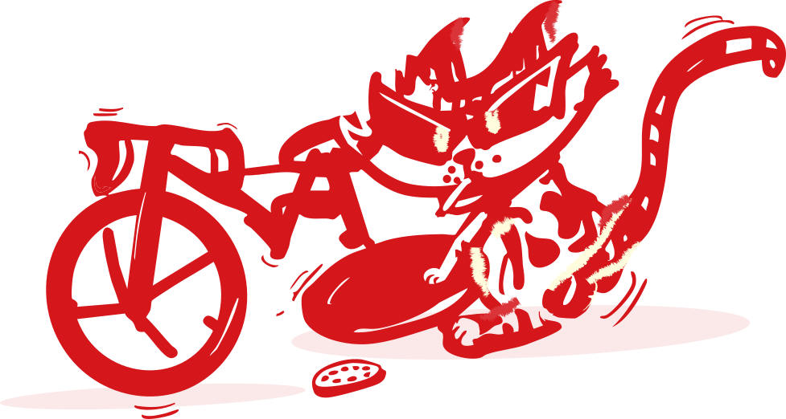

REPAIRS &
SERVICING


(includes deep clean)
£55(high-end bikes, full overhaul)
£75(high-end bikes, full overhaul)
£25Get your bike back on the road fast with our expert technicians and premium parts. We handle most repairs in under 48 hours, and we’ll always call you first if any extra work is needed, so there are no surprises only smooth, reliable rides.
Broken chain mid-ride or bike trouble out of nowhere? Swing by during our opening hours and our friendly mechanics will work quickly to get you rolling again, often on the spot. We’ll assess the issue, explain what needs fixing, and do everything we can right away so you can spend less time waiting and more time enjoying the ride.
Book your bike in during October-February and get 10% off full services. Beat the spring rush!